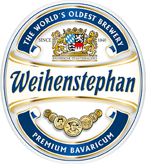

Evidence of beer found in ceramic vessels at Godin Tepe (modern day Iran) and other sites around Sumer. Some say beer brewing at this locatin could be as early as 10,000 BCE. Citation
The Sumerian poem Hymn to Ninkasi is a song of praise to the goddess of beer, Ninkasi. The poem also details the process of making beer. Beer at this time was brewed with barley bread cakes.
Germans were brewing beer (which they called ol, for `ale') as early as 800 BCE. Great quantities of beer jugs, still containing evidence of the beer, were found in a tomb in the Village of Kasendorf in northern Bavaria, near Kulmbach.
In India, the empire of the Maurya dynasty controls almost the entire Indian subcontinent. A Treatise on Politics and Economics written between the years 50 and 125 details the production and consumption of fermented beverages, especially beer. Beer production becomes a sources of tax and duties.
Excavations of a Roman military encampment on the Danube have unearthed evidence of beer brewing on a significant scale shortly after the community was built by Marcus Aurelius.
Hops first documented use was in the 8th century when Benedictine monks used them for brewing in a Bavarian abbey outside of Munich, Germany. Before hops, beer was flavored and preserved with gruit, a combination of heather, mugwort and other locally grown herbs and spices. Citation
Since 1040, beer has been brewed on the Weihenstephan Hill in Freising. Weihenstephan are the world's oldest brewery. Link 
Brewers in Bremen, Germany discovered exactly how many hops to add to keep beer shelf-stable for six months. These brews, which didn’t spoil as quickly, were then being shipped all over Europe.
Reinheitsgeobot is established in Germany. Only Barley, Hops and Water are permitted in the production of beer. Interestingly, yeast is not mentioned.
In the seventeenth century, a Dutch tradesman named Antonie van Leeuwenhoek developed high-quality lenses and was able to observe yeast for the first time. Leeuwenhoek used his lenses to observe and record detailed drawings of protozoa, bacteria, and yeast. Leeuwenhoek discovered that yeast consist of globules floating in a fluid, but he thought they were merely the starchy particles of the grain.
Michael Combrune, a brewer who lived in the London metropolis between 1740 and 1750, is usually considered to be the promoter of the brewery thermometer for Great Britain. His Essay on Brewing of 1758 is the first known text recommending the use of thermometers to brewers. Citation
Louis Pasteur was the first to demonstrate experimentally that fermented beverages result from the action of living yeast transforming glucose into ethanol. He called the fermentation process, respiration without air. Pasteur also showed that there are two types of fermentation: alcoholic and lactic acid. Alcoholic fermentation occurs by the action of yeast; lactic acid fermentation, by the action of bacteria. Citation
Attempts to legislate an, “American Reinheitsgebot.” Leading up to and during this period, brewers used rice and corn adjuncts in the production of clean, clear lagers suitable for drinking cold. The American palate had grown accustomed to this style of beer. Attempts by lobbyists to profit off of the dispute, were revealed and the bill was never passed. Citation
President Jimmy Carter signed into law the right for home brewers to make their own beer. October 14 is the anniversary of the day that homebrewing beer without federal taxation was made possible in the United States. The legalizatin of home brewing exposed many hobbyists to brewing and likely contributed to the growth of the craft beer industry we see today. Citation